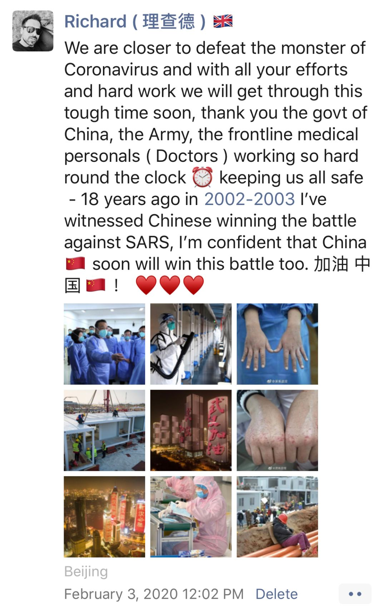
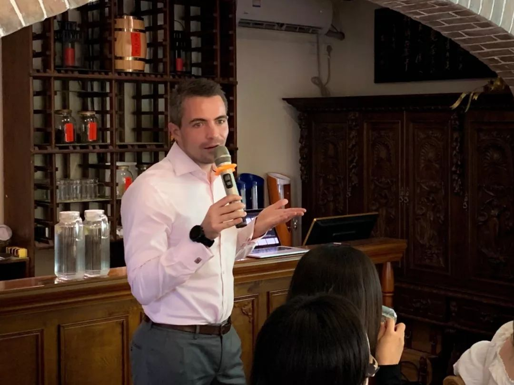
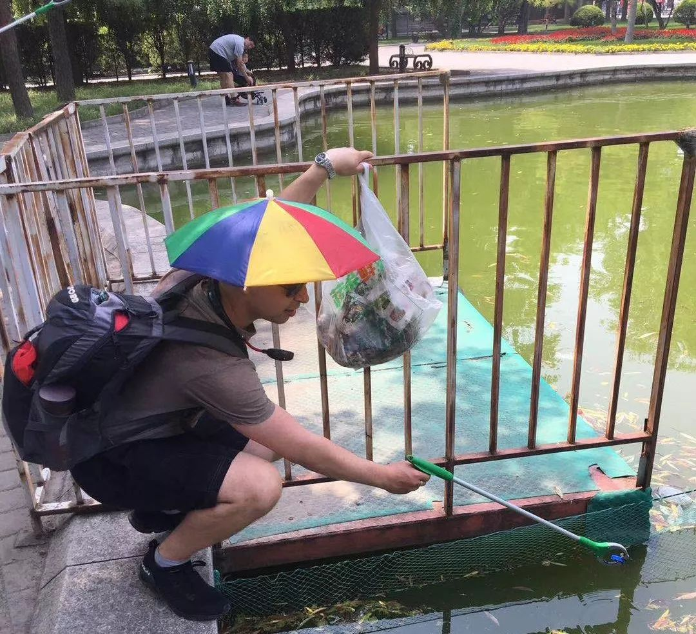

抗疫时期的中国舆论场②：从局面到「人」
原文链接 备份链接 **抗疫时期的中国舆论场继续展示着复杂性，并且是以一种更加被凝视的方式。 ** 除夕当夜极大的情绪压力释放之后，从第二天（1月25日）开始，整体舆论场趋向稳定和积极：“第一舆论场”的焦点在于可控的整体局面，积极的防疫行 …

题记：“影响大众想象力的，并不是事实本身，而是它扩散和传播的方式。”
——古斯塔夫·勒庞《乌合之众》
世卫组织近日将此次新冠病毒带来恐慌和混乱的问题称为“信息疫情”（Infodemic），并指出“社交媒体上散布着大量有关疫情、真假不一的消息，公众很难区分哪些是可靠的信息来源和有效的防疫指南。”
1 月 19 日，距离春节仅剩一周之时，Tommy Tang 和女朋友离开深圳，打算去武汉与女方家人一起过年。此前，他们听说过这种新型冠状病毒（现正式命名为 COVID-19），不过他们以为病毒只出现在一小部分地区。当时，武汉政府称，只有去过华南海鲜市场并接触过野味的人才有可能感染。
但是在 1 月 20 日晚，钟南山院士更正了这一消息。他表示：病毒存在人传人的风险。随之而来的便是大规模公众恐慌。一夜之间，武汉市民纷纷戴上口罩。Tommy 和女友才意识到了武汉疫情的严重性，他们随即改变了计划，第二天就乘火车离开了武汉。而后不到 48 小时，武汉便全面封城。
回到深圳以后，他们俩在家中自行隔离了 14 天，每天只戴口罩出门倒一次垃圾。Tommy 的家人都定居在深圳，但却没办法团聚。他只能通过大门上的猫眼和母亲互道春节快乐。他从美团外卖、达达和京东到家等送货软件上订购了食品、肥皂和卫生纸等日用品。而在隔离的第 3 天，他打开软件时发现所有的货都被抢购一空，一时间也陷入恐慌。

（来源：DeepTech）
“所有东西都已售空，蔬菜也都卖光了。”他表示，“但和武汉相比，我们（深圳）的情况还相对乐观。”
Tommy 认为，造成恐慌的最大源头就是来自社交媒体发布的各种疫情消息。这些新闻会不断加剧他的担忧，他和女友在自我隔离期间一直失眠，每天都非常担心。他们不仅担心自己会感染病毒，也担心女友的家人会受到影响。
“老实说，这 14 天的自我隔离确实很难熬。”他说道，“我们每天只能看新闻，而且疫情也在不断加剧当中。这对于身处他乡的人来说是最难熬的。”

（来源：MIT Technology Review）
这也是此次新冠病毒疫情和之前发生的其他疫情的不同所在。虽然非典、MERS 和寨卡病毒都造成了全球恐慌，但这一次，社交媒体无疑加剧了公众对于疫情的恐惧心理。同时，虚假信息通过社交媒体迅速传播，引发了公共信任危机，也为网络内外的恐慌和种族主义推波助澜。
目前，世卫组织计划与 Twitter、Facebook、腾讯和抖音等公司合作，来共同解决这一问题。比如，当人们搜索疫情相关消息时，置顶的信息均为官方发布，并且地图还会显示最新的疫情警示信息，从而确保信息来源的可靠性。
社交媒体和各大卫生组织也在积极采取行动。抖音正在删除存在故意误导性的视频，字节跳动发布声明表示：“禁止发布任何有损公众利益的误导信息。”腾讯也在微信上利用事实核查手段审查相关内容，并实时为疫情谣言辟谣。
图 | 世卫组织总干事谭德赛（来源：Salvatore Di Nolfi/EPA）
但上述努力所消除的负面影响，在铺天盖地的新闻轰炸下简直是杯水车薪。而这也为那些排外主义者提供了绝佳的网络环境，种族主义和歧视的声音在网络上肆意蔓延。有些年轻人甚至谎称感染病毒来博取关注，这些网络谣言很多已成为公众讨论的话题。亚洲人则面临着种族主义和歧视的威胁，国外唐人街和中餐厅的生意也止步不前。
虽然社交媒体上一直有人在散布虚假信息，但各种真实可靠的消息也是通过社交媒体发布的。世界各地的记者均通过中国的社交媒体等渠道获悉了疫情的准确消息，并收集整理了可靠内容，以供当地居民参考。此外，政府对疫情相关问题的处理，通过社交媒体的披露一定程度上也会安慰人心。
社交媒体也是实时跟进疫情进展状况的好办法。一些服务平台已经在利用社交媒体来帮助公共卫生官员监控病毒的发展。尤其对于那些存在审查机制问题或缺乏疾病报告平台的地区来说，社交平台的消息有利于当地人们在疫情发展期间尽早做准备，并在病毒进一步扩散前进行控制。
除此之外，这也成为了人们集体抒发情感的场所。微博和微信上那些绝望患者和好心人的故事比比皆是。除了一些让人感到难过、恐慌的内容之外，还有众多关于捐赠物资、志愿服务，以及慷慨解囊的正能量消息。
社交媒体平台如今是国内外了解肺炎疫情的重要方式，它为人们提供了情绪宣泄的渠道，在散布恐慌和担忧的同时，也给人们带来了希望。但是针对那些不论在国内还是国外，借疫情煽动排外、种族主义情绪的信息来说，客观理性看待社交媒体信息则尤为重要。
在北京，有这样一群外国人，他们在疫情发生后，自发地建立了一个微信群组，实时在群里公布官方疫情发布和相关文章，并通告一些面向在中国工作生活的国外人士的内容。DeepTech 专访了这个群组的群主和几位在中国工作、目前也在京的外国人，聊了聊他们对待此次疫情的看法。

（来源：Town of Windsorct）
“避免恐慌，相信官方消息”

英国人 Richard 是北京一所国际学校的学术主管，在中国工作多年。
自从新冠病毒疫情在春节期间愈演愈烈，官方新闻、小道消息夹杂爆发的时期，Richard 迅速在微信上建立了一个群组，并不断地拉进在中国工作的外国人，以便实时在群里公布官方信息。同时，也方便通告一些面向在中国工作生活的国外人士的内容。
说起成立微信群组的目的，Richard 表示，就是要帮助这个群体，将中国官方发布的信息及时更新给他们，同时也出于互相安慰和帮助人们免于恐慌的目的。他认为，在群组里了解真实消息，并与他的中国朋友待在一起是确保人们安全和团结的最好方法。
Richard 在中国住了有 18 年，经历过非典，也见证了中国的飞速发展。他告诉 DeepTech ，“我把这里当作我的第二个家，相信在大家的努力下，我们很快就会渡过难关。”
在 Richard 看来，尊重并遵守所在国家的法律和规定是十分重要的，面对各种消息也要客观理智。“在这个微信群组里，不允许人们发送任何虚假的或任何未经中国当局核实的信息。同样，在群里也要求人们尊重有关规定。人们从根本上应该明白一个问题，没有哪个国家不希望解决这次疫情，保障人民的安全。”
对于是否收到了英国政府的有关信息，他表示：“很明显，所有的政府都关心他们的公民。我们也收到了英国政府的通知，但主要是针对那些在武汉并想要离开的人。很多住在北京和中国其他地方的英国人都决定留在中国，而不是回国。我们都认为在这个时候待在家中比旅行更加安全。所以，一些人离开了，另一些人决定留下来。”
对于国际社会出现的不良声音，Richard 表示：“首先，我不认为疫情的爆发与是外国人，还是中国人有任何关系。病毒是没有边界的，也和种族无关。所以那些内容是非常不公平、并极具种族主义的，我已经在多个社交媒体上发了很多帖子来表示与中国同胞的团结，并强烈谴责了所有歧视中国的人。现在最应该做的，是保持良好的个人卫生，尽量待在家中，与政府合作来遏制病毒的扩散。”

图 | 在 2 月 3 日 Richard 的朋友圈截图（来源：DeepTech）
“无知会导致恐惧，但种族主义都是白痴”
来自英国的 Ian Flanagan 在中国工作了 8 年，他给自己取了个中文名字——尹凯哲。
Ian 曾在中国各地的多家房地产公司工作过，目前他正在北京创业，开发了一款帮助人们找办公室的 App。对于国外媒体的歧视话语，以及相关暴力行为，他直言不讳：“种族主义者都是一群白痴，这群人始终存在，并不只是当下，也不只是针对中国。他们无非是冲着一个可以占据头条的话题。”
“对于这群人，我们很多时候也确实感到无可奈何，他们缺乏教育，没什么可行的沟通方法。” Ian 说道，“但对于更多的普通人来说，因为不同国家的人之间并不太了解，尤其是当地理距离也很远时，这种对未知事物的无知会引发恐惧。他们不知道或不清楚事情的真实模样，便会持消极态度，做最坏的打算。而一旦有所了解，很多事便不再是问题。”
对于这次疫情， Ian 评价称：“目前中国政府处理危机的方式，比我所见过的任何其他国家处理任何一次疫情的方式都更有效。”

图 | Ian Flanagan 在分享工作经验（来源：DeepTech）
但对于这些信息，国外有很多人不清楚。起初， Ian 在英国的家人和朋友，都劝他回英国， Ian 就很仔细地向他们解释关于病毒的细节。实际上， Ian 认为北京是最安全的地方之一，因为整个国家都处于对疫情的戒备状态。长途旅行回国反而会增加患病风险，也很有可能将病毒带去英国，所以他选择待在北京的家中不出门。
同时，Ian 认为正是鉴于中国对待疫情做出的迅速反应，以及良好的应对经验，才让其他国家在病毒传播的最初阶段可以向中国学习。“在 2003 年，中国有了应对非典的经验，如果疫情发生在其他国家，我想情况恐怕会无比糟糕。当然，能避免这次的病毒扩散到其他国家是最好的。不过一旦其他国家出现问题，中国无疑是一个学习榜样。”他补充道。
对于戴口罩是否会在英国属于常见现象，Ian 说道，大概只有建筑、制造工人或医生会戴着口罩来防尘和防止疾病传染。除此之外，几乎没有人会戴口罩。通常，人们生病就会待在家中，足够小心地避开人多的地方，尽量避免打喷嚏。
最后，Ian 讲述了应对疫情方面，两国公民可能存在的不同。“比如，在中国，政府呼吁不要聚众活动时，大多数人们都会遵循这一点，在家里不出门。而在西方，很多人不会在意，仍去做自己想做的事情；只有受过良好教育、了解病毒风险的人会选择待在家里。”
“不准确或倾向性报道带来恐慌，病毒没什么大不了的”
对于让各个国家严阵以待，让许多人惶恐不安的新型冠状病毒，也有人给出了不一样的看法。Tarkan Kemal Bozkurt，同样也来自英国，他从 2010 年开始往来于中英两国，其中大部分时间在北京度过。在周末，Tarkan 最常做的事情除了与朋友们喝酒，就是去公园里拾取行人乱扔的垃圾。

图 | 右二为经常与朋友们在 OSSIE 酒吧相聚的 Tarkan（来源：DeepTech）
“在我看来，新型冠状病毒的爆发引起了公民的恐慌和许多不准确的报道。我看到身边部分人们在过分恐惧，并认为这是对疫情非理性的担忧。” Tarkan 说，“我经历过许多疾病的爆发，比如在英国，我们有像疯牛病和猪流感这样的病毒感染。猪流感当时非常严重，在英国的感染者就高达数十万人以上，但人们对此却知之甚少，并且照常上班。”
“所以，对于我来说，新型冠状病毒并不可怕。这只是人类知道的，在世界上已经传播的一长串病毒名单上又新增的一个成员。根据媒体报道，英国每年都会有很多人死于流感，美国 CDC 也有相关预测的数据，记得说这个冬天在美国因为流感死亡人数已超过 1 万人。” 他补充道。
对于媒体的一些报道，Tarkan 的看法是：“我知道在英国的一些媒体是很可靠的，但不幸的是，那些不可靠的媒体反而更受欢迎，比如，太阳报（The Sun）和每日邮报（The Daily Mail）。同样，也正是那些不可靠的媒体正竭尽全力地尝试加剧人们的恐慌情绪，并创造出英国公众强烈的排外情绪。因此，他们关于新型冠状病毒的报道大多是负面的，这蒙蔽了很多英国民众。”
但他也表示，除了从媒体上看到那些极端报道以外，他并没有发现任何其他的例子。“总体来说，从我个人经历来看，我在中国遇到的，或者在我家乡与我交流的西方人在这个危机时刻都非常支持中国人民。我认为，西方国家的媒体是最具种族主义色彩因素的，他们可能是为了进一步损害中国经济而在助长反华情绪。”
Tarkan 表示：在西方，就像在中国一样，人们也很关注新闻报道。所以一部分人因为那些有指向性的内容做出一些反对中国人或者亚洲人的行为是可以理解的。尽管，这本身是没有道理，并且非常滑稽的。

图 | 在公园清理垃圾的 Tarkan（来源：DeepTech）
“应对措施很好，但这次疫情本可以避免”
在北京为一家德国政府公司工作的 27 岁德国青年雅克（化名，由于服务于政府相关机构，他并不希望透露姓名）对 DeepTech 表示：“对于中国应对疫情所采取的措施，我认为都是很好的，官方响应和采取措施的速度很快。目前来看，疫情的扩散似乎得到了控制，并没有像最初那样激增。同样，这次病毒也并没有想象的那么可怕。”
但是他认为，关于动物市场的更严格的法律和监管措施，本可以阻止这种新型冠状病毒的传播。虽然他知道并不是所有中国人都会吃诸如蝙蝠这类野生动物，但是只要有一部分人这样做，就很容易让外界对一个群体贴上标签。
此外，他表示自己获取的信息都由任职的德国政府公司发布，并不会去看更多其他新闻。“来自公司的信息告诉我们，他们很重视这次新型冠状病毒的疫情，但考虑中国的应对措施，暂时并没有发现任何理由让我们离开这里。”
对于网上传播的歧视问题，他评论：“首先，我对亚洲人因为这次疫情而受到歧视感到很难过。但客观地来看，这不仅仅只是针对亚洲人的情况，我所在公司的德国人与受感染的人，回到德国也会受到另类的眼光。这更多是出于对病毒的恐惧。”
“但如果怀着对病毒的恐惧，又仅仅因为亚洲人看起来不同，就将他们与病毒联系在一起，这种做法是很可悲的。如果非要找一个理由，很有可能是因为他们内心充满更为强烈的恐惧感。即使在中国，有些村庄也不允许陌生人进入或者外地返回的人走出自己房屋。”他补充道，“如果此次疫情的情况正好相反，或许亚洲人同样会用相似的眼光看待西方人。这件事的根本原因是病毒来自哪里，所以要改变这种行为并不容易。”

（来源：Infectious Diseases Hub）
对于这些生活在中国的外国人来说，他们的感受无疑是直观、理性的，这份对待媒体的客观与理智值得借鉴。在面对采访时，即便这些人在日常生活中都是笔者朋友，但在问及是否可以采访时，他们也会非常认真地询问：“如果对于问题觉得敏感，是否可以不回答？”或者 “在描述中，能否完全遵从我的英文愿意？”
生活在一个科技发达、信息爆炸的时代，既是幸运的，也是不幸的。大量的信息会混淆、干扰人们的判断，并且获取信息越来越容易和丰富，并不一定就代表拥有的知识也越来越多。人们需要有更多的自主思考，对信息内容、来源的判断，就拿此次新型冠状病毒来说，一方面需要认识到疫情的可怕，加强自我防护；而另一方面，也要发现面对灾难，人们表现出的积极与善良。
在疫情期间适当的焦虑有助于大家在心理上提高对病毒的防范，但过度的焦虑情绪会带来因“信息疫情”而产生的不良影响，包括焦虑症、抑郁症，以及创伤后应激障碍等，这反而可能导致超过新冠病毒感染而带来的后果。
-End-
参考：
https://www.technologyreview.com/s/615184/the-coronavirus-is-the-first-true-social-media-infodemic/

原文链接 备份链接 **抗疫时期的中国舆论场继续展示着复杂性，并且是以一种更加被凝视的方式。 ** 除夕当夜极大的情绪压力释放之后，从第二天（1月25日）开始，整体舆论场趋向稳定和积极：“第一舆论场”的焦点在于可控的整体局面，积极的防疫行 …
原文链接 备份链接 02.02.2020本文字数：3224，阅读时长大约5.5分钟 导读：病毒传播路径的信息，为何在病毒全面开花扩散之后，源源不断地发表在论文上。 作者 | 第一财经 马晓华 从新型冠状病毒开始踏足武汉，到蔓延至全国甚至 …
原文链接 备份链接 世界卫生组织（WHO）总干事谭德塞在2020年1月30日宣布：新冠疫情的全球性暴发，已构成“国际关注的突发公共卫生事件”（PHEIC）。 谭德塞同时强调，这一宣布是基于新冠疫情在中国以外的发展情况，而非针对中国国内 …
原文链接 备份链接 戴好口罩，保护自己。/《想见你》 ***在这场疫情防控阻击战中，每个个体在关心当下时事时，也要学会体察自己的情绪与心理。*** 食欲不振，作息紊乱，凌晨仍抱着手机不停翻看妄图穷尽所有与新型冠状病毒肺炎有关的信息，唯恐错 …
原文链接 备份链接 二月初一。 今天仍然是大晴天。想起小时候，家里有一本书，名字就叫《大晴天》。内容说什么，早已经忘光了。前阵以为梅花已都谢尽，不料，昨天突然发现，院子里的红梅正怒放着。而且没有哪一年像今年这样，开得如此明丽鲜艳，一种隆重 …